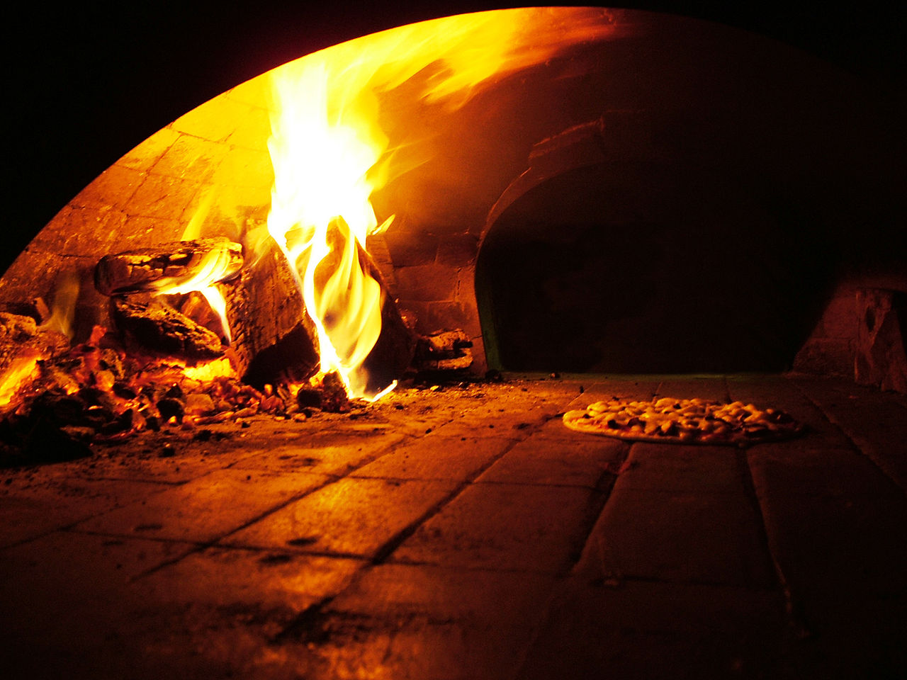

La pizza es un pan plano horneado, habitualmente de forma redonda, elaborado con harina de trigo, sal, agua y levadura, cubierto con salsa de tomate y queso.1 Existen gran cantidad de variedades, principalmente debido al formato del pan, la forma de cocinarlo y el agregado de diversos ingredientes (salami, tomate, champiñones, cebolla, jamón, aceitunas, morrones, ananá, huevo, verduras, anchoas, palmitos, etc.) y salsas. Su origen es dudoso,1 pero ha sido tradicionalmente atribuido a la gastronomía de Italia y más puntualmente a la cocina napolitana, razón por la cual la Unión Europea le reconoció en 2010 una denominación de origen denominada Especialidad tradicional garantizada (ETG).234 En 2017 la UNESCO declaró al "arte de los pizzaioli (pizzeros) napolitanos" como Patrimonio Cultural Inmaterial de la Humanidad.5 La pizza y la hamburguesa están consideradas las comidas más difundidas del mundo,67 aunque como consecuencia de la diáspora italiana alcanza máxima presencia en ciudades con alta proporción de descendientes de personas italianas, como Buenos Aires —que cuenta con la mayor cantidad de pizzerías por habitante—, Chicago y Nueva York. Es un plato de elaboración artesanal en la mayoría de los casos, aunque la industria alimentaria fabrica desde la década de 1950, pizzas preparadas total o parcialmente (prepizza) que se venden en los centros de ventas. Desde 1989, tiene lugar anualmente en Italia un Campeonato Mundial de la Pizza que realiza varias competencias relacionadas con la elaboración de la pizza, premiando a quienes obtengan los tres primeros lugares en cada una de ellas. En la edición de 2018 participaron 773 pizzaioli provenientes de 44 países.
Los antecedentes históricos de la pizza se relacionan con el empleo del pan de trigo en las antiguas culturas de Egipto, Persia, Grecia y Roma. En la época de Darío I el Grande (521-500 a. C.) los soldados persas comían un pan plano con queso fundido y dátiles en su parte superior.14 En la Antigua Roma los soldados comían un pan plano con aceite de oliva y hierbas, de origen probablemente etrusco, llamado focaccia (fugassa en genovés),15 aún existente. Panes planos con agregados similares se encuentran en diversas culturas en todo el mundo. La pizza, tal y como se conoce en la actualidad, procede de la ciudad italiana de Nápoles y aparece como plato popular entre los napolitanos, en algún instante no definido del siglo xvii.15 Nápoles se había diferenciado del resto de Europa por haber incorporado a la alimentación el tomate proveniente de América durante el siglo xviii, mientras que en el resto del continente se creía que era venenoso. Las semillas de tomate provenientes de Perú en la década de 1770 originaron en Nápoles una variedad conocida como tomate San Marzano, cuya baja acidez lo hizo óptimo para la preparación de salsa de tomate.16 La combinación de pan, salsa de tomate y queso dio a origen a un alimento caliente, apetecible y barato para los habitantes humildes de la ciudad. Aunque está probado que la pizza clásica moderna (mozzarella y tomate) existía al menos desde la década de 1830,1718 un relato tradicional no documentado ubica la fecha en junio de 1889 cuando, para honrar a la reina de Italia Margarita de Saboya, el cocinero Raffaele Esposito de la pizzería Brandi19 creó la pizza Margarita, cuyos condimentos (tomate, mozzarella y albahaca) representaban los colores de la bandera italiana. La diáspora italiana iniciada a mediados del siglo xix, difundió el gusto por la pizza, primero desde Nápoles al resto de Italia, después a varios países de América, como Argentina y Estados Unidos, y finalmente a todo el mundo. Desde su invención, la pizza ha sufrido muchas modificaciones regionales, por ejemplo en Roma es muy popular la pizza al taglio, en Liguria la sardenara y en Sicilia la sfincione. Fuera de Italia, en Argentina la pizza argentina (media masa y alta concentración de ingredientes), la fugazzetta y el acompañamiento con fainá; en México la pizza mexicana; en Estados Unidos la pizza estilo Chicago; y en Francia la pissaladière.
Los ingredientes de la tradicional pizza napolitana, conocida como pizza margherita, son: para la masa: harina de trigo tipo 00, agua, levadura, sal y aceite de oliva; para el agregado: tomate triturado, queso mozzarella de búfala y hojas de albahaca fresca. Gran cantidad de diferentes tipos de pizzas se realizan con agregados muy variados, como rodajas de tomate, diferentes tipos de quesos, jamón, anchoas, morrones, palmitos, salami, ananá, huevo, champiñones, verduras, cebolla, etc.
Una parte crucial de la preparación de la pizza es la preparación de la masa y su leudado. La harina debe mezclarse manualmente con el agua, la sal y la levadura, hasta formar una masa homogénea, elástica y suave.2526 A continuación la masa debe dejarse en reposo —generalmente en forma de bollo— para que leude, luego de lo cual se separa para formar cada una de las bases —generalmente de forma redonda—.2526 La tradicional pizza napolitana utiliza harina doble cero (que tiene mayor cantidad de gluten), una gran cantidad de agua (un litro cada 1,7 kilos de harina), se deja leudar dos días, para hacerla más digestible, evitando que el proceso de fermentación finalice en el estómago del comensal.1 Con la masa así procesada se modela un disco de tamaño variable, generalmente del tamaño de un plato grande, o algo mayor, con un grosor relativamente delgado. Antes de ingresarla al horno, se pinta la superficie del disco con salsa de tomate y sobre la misma se coloca el queso, cortado en pedazos y distribuido sobre la superficie para que se derrita uniformemente, sin desbordar.2526 Lo mismo se hace en caso de que sean otros los ingredientes a utilizar como agregado.